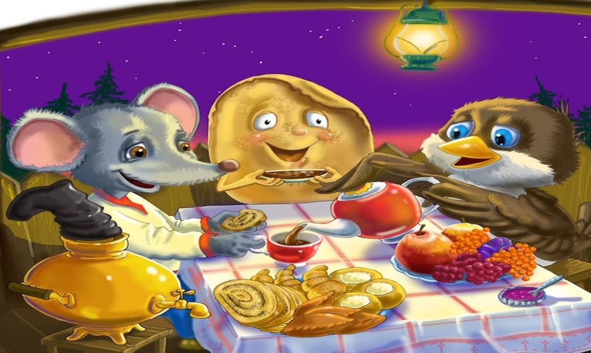
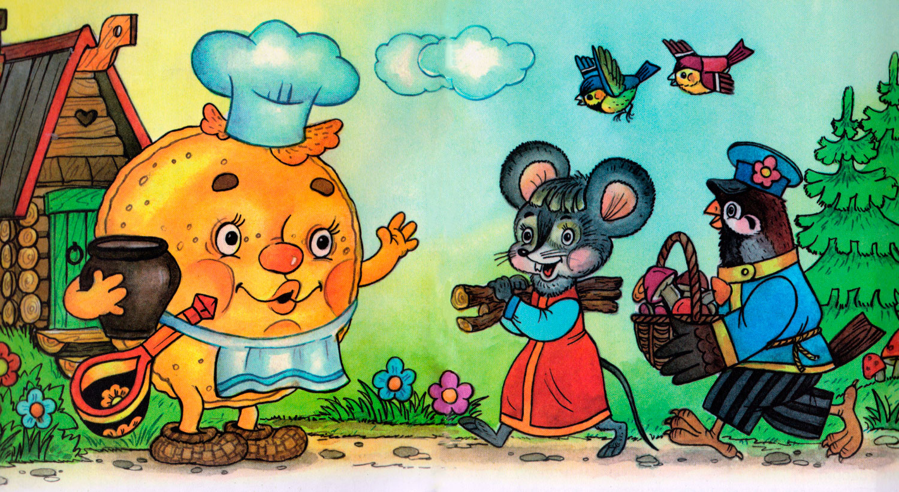
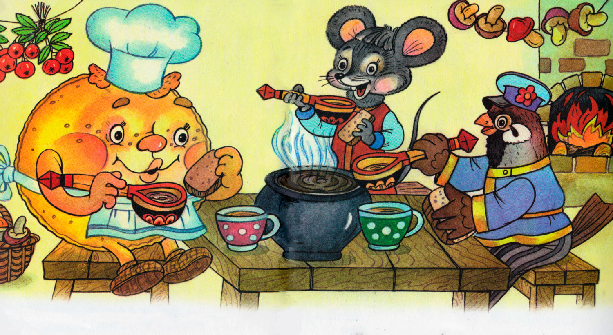
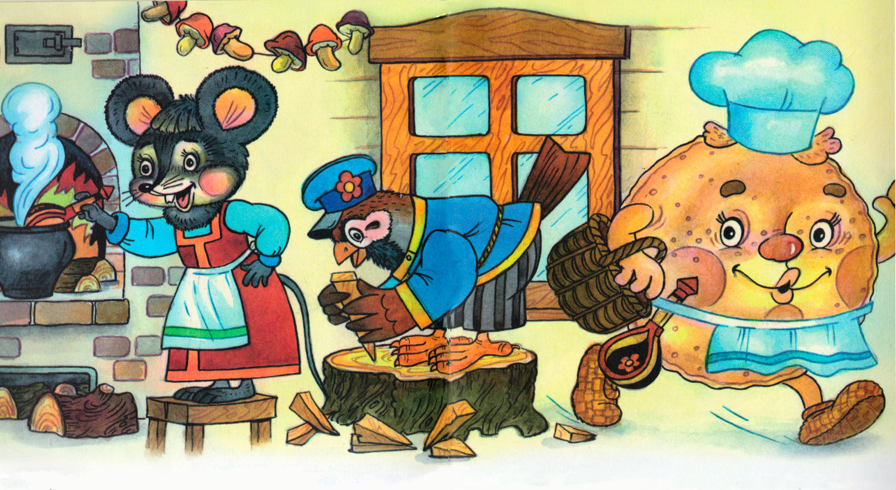
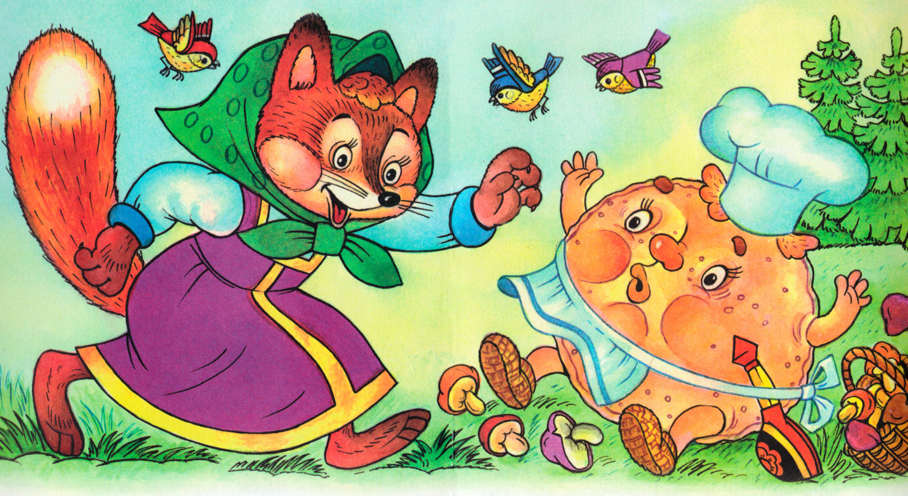
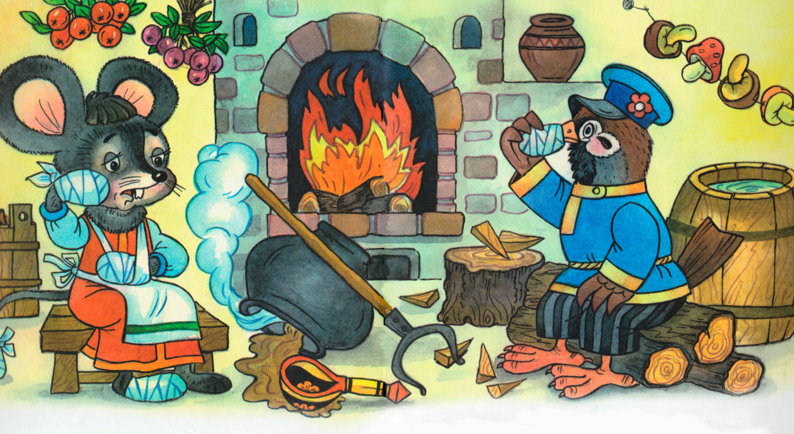
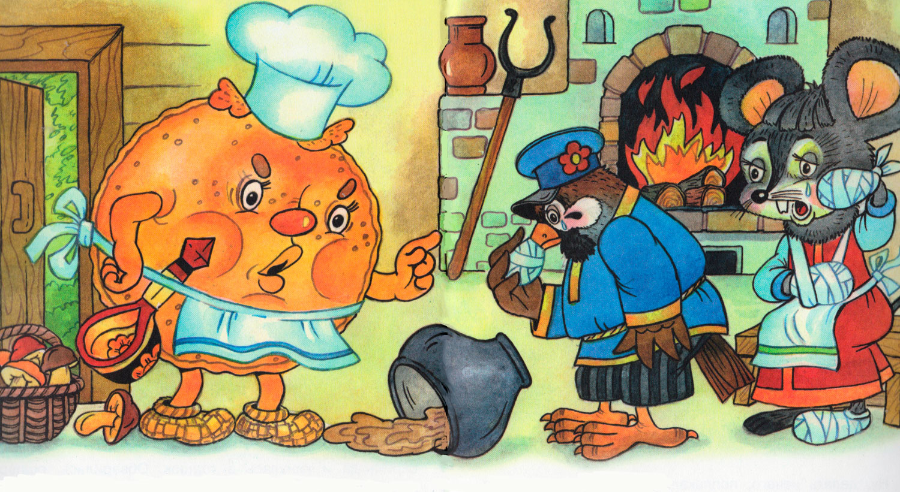
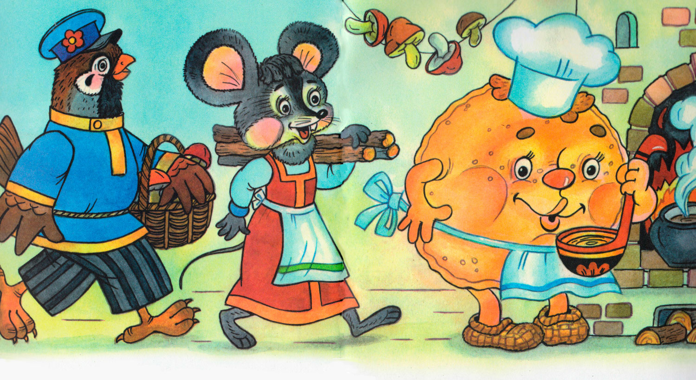

Крылатый, мохнатый да масленый

На лесной опушке, в тепленькой избушке, жили-были три братца: воробей крылатый, мышонок мохнатый да блин масленый.
Воробей с поля прилетел, мышонок от кота удрал, блин со сковороды убежал.

Жили они, поживали, друг друга не обижали. Каждый свою работу делал, другому помогал. Воробей еду приносил — с полей зерен, из лесу грибов, с огорода бобов. Мышонок дрова рубил, а блин щи да кашу варил.
Хорошо жили. Бывало, воробей с охоты воротится, ключевой водой умоется, сядет на лавку отдыхать. А мышь дрова таскает, на стол накрывает, ложки крашеные считает. А блин у печи — румян да пышен — щи варит, крупной солью солит, кашу пробует.

Сядут за стол — не нахвалятся. Воробей говорит:
— Эх, щи так щи, боярские щи, как хороши да жирны!
А блин ему:
— А я, блин масленый, окунусь в горшок да вылезу — вот щи и жирные!
А воробей кашу ест, похваливает:
— Ай каша, ну и каша — горазд горяча!
А мышь ему:
— А я дров навезу, мелко нагрызу, в печь набросаю, хвостиком разметаю — хорошо в печи огонь горит — вот и горяча!
— Да и я, — говорит воробей, — не промах: соберу грибов, натащу бобов — вот вы и сыты!
Так они жили, друг друга хвалили, да и себя не обижали.
Только раз призадумался воробей.
«Я, — думает, — целый день по лесу летаю, ножки бью, крылышки треплю, а они как работают? С утра блин на печи лежит — нежится, а только к вечеру за обед берется. А мышь с утра дрова везет да грызет, а потом на печь заберется, на бок перевернется, да и спит до обеда. А я с утра до ночи на охоте — на тяжкой работе. Не бывать больше этому!»
Рассердился воробей — ножками затопал, крыльями захлопал и давай кричать:
— Завтра же работу поменяем!
Ну, ладно, хорошо. Блин да мышонок видят, что делать нечего, на том и порешили. На другой день утром блин пошел на охоту, воробей — дрова рубить, а мышонок — обед варить.

Вот блин покатился в лес. Катится по дорожке и поет:
Прыг-скок,
Прыг-скок,
Я — масленый бок,
На сметанке мешан,
На маслице жарен!
Прыг-скок,
Прыг-скок,
Я — масленый бок!
Бежал, бежал, а навстречу ему Лиса Патрикеевна.
— Ты куда, блинок, бежишь-спешишь?
— На охоту.
— А какую ты, блинок, песенку поешь?
Блин заскакал на месте да и запел:
Прыг-скок,
Прыг-скок,
Я — масленый бок,
На сметанке мешан,
На маслице жарен!
Прыг-скок,
Прыг-скок,
Я — масленый бок!
— Хорошо поешь, — говорит Лиса Патрикеевна, а сама ближе подбирается. — Так, говоришь, на сметане мешан?
А блин ей:
— На сметане да с сахаром!
А лиса ему:
— Прыг-скок, говоришь?
Да как прыгнет, да как фыркнет, да как ухватит за масленый бок — ам!
А блин кричит:
— Пусти меня, лиса, в дремучие леса, за грибами, за бобами — на охоту!
А лиса ему:
— Нет, я съем тебя, проглочу тебя, со сметаной, с маслом да и с сахаром!

Блин бился, бился, еле от лисы вырвался, — бок в зубах оставил, — домой побежал!
А дома-то что делается!

Стала мышка щи варить: чего ни положит, а щи все не жирны, не хороши, не маслены.
«Как, — думает, — блин щи варил? А, да он в горшок нырнет да выплывет, и станут щи жирные!»
Взяла мышка да и кинулась в горшок. Обварилась, ошпарилась, еле выскочила! Шубка повылезла, хвостик дрожмя дрожит. Села на лавку да слезы льет.
А воробей дрова возил: навозил, натаскал да давай клевать, на мелкие щепки ломать. Клевал, клевал, клюв на сторону своротил. Сел на завалинку и слезы льет.
Прибежал блин к дому, видит: сидит воробей на завалинке — клюв на сторону, слезами воробей заливается. Прибежал блин в избу — сидит мышь на лавке, шубка у ней повылезла, хвостик дрожмя дрожит.
Как увидели, что у блина полбока съедено, еще пуще заплакали.

Тут блин и говорит:
— Так всегда бывает, когда один на другого кивает, свое дело делать не хочет.
Тут воробей со стыда под лавку забился.
Ну, делать нечего, поплакали-погоревали, да и стали снова жить-поживать по-старому: воробей еду приносить, мышь дрова рубить, а блин щи да кашу варить.
Так они живут, пряники жуют, медком запивают, нас с вами вспоминают.
